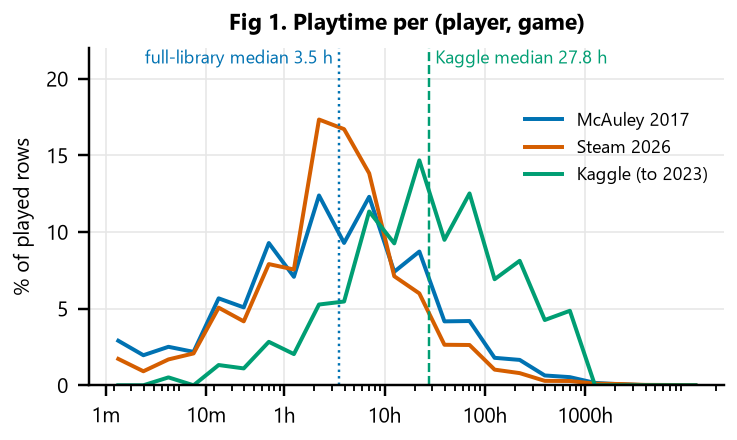
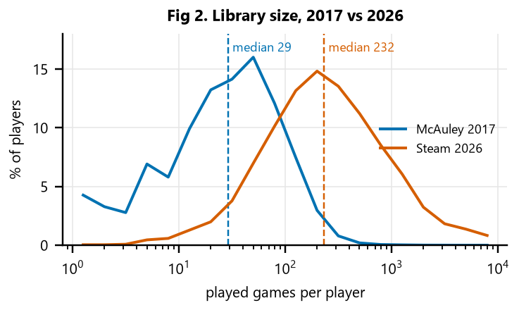
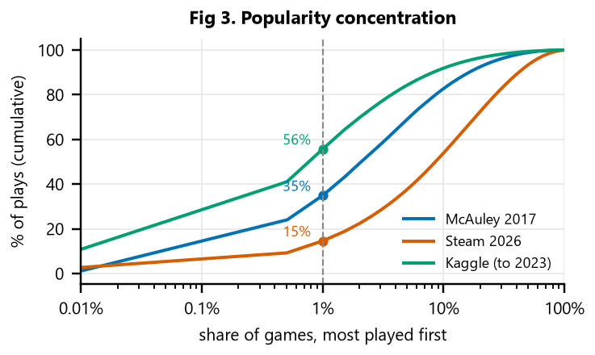
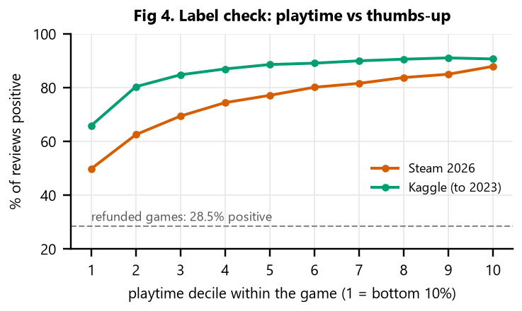
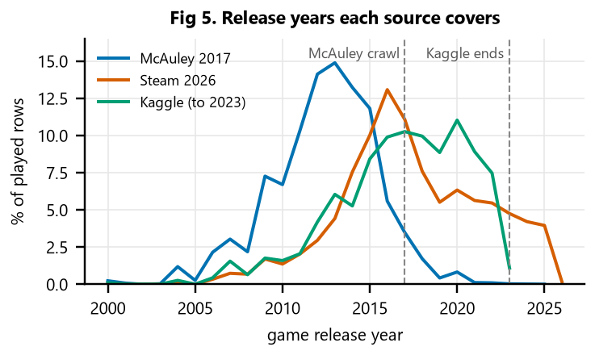

The recommender takes a player's Steam library and suggests games they are likely to enjoy. Most players never review, so "enjoyed" has to come from behavior: how long someone played a game compared with that game's other players. Three sources supply that behavior; a fourth supplies the game catalog.
| Source | What it holds | Players | Played rows* | Role |
|---|---|---|---|---|
| McAuley Australian Steam (2017) | Full libraries, played and unplayed | 68k | 3.2M | Primary training source and 2017-era evaluation (players differ from today's, Fig 2) |
| Steam 2026 (our collection) | Public full libraries of recent reviewers, via Steam's official API | 2.4k | 1.4M | Modern players: own test slice and label re-test |
| Kaggle Steam reviews (to Oct 2023) | Reviewed games only; hours at review time | 13.7M | 40.4M | Extra training rows and label validation |
| FronkonGames Steam Games (Oct 2026) | 124,146 games: genres, descriptions, prices | — | — | Catalog: 72,919 of 111,167 recommendable games, incl. all 38,637 released 2024–2026 |
*Playtime above zero, app counts as play history, bulk reviewers excluded: the filter every model trains on (Kaggle: 40.4M of 41.15M cleaned rows). The merged catalog has 137,725 apps; 111,167 are recommendable (released, on sale, and passing our content filters, Section 2).
clean/build_clean.py rebuilds every table from the raw files and runs 21 validation checks; all pass.
Examples: catalog app_id is unique; every interaction joins to the catalog; each (player, game) pair
appears once per source; two-week playtime never exceeds lifetime playtime; no playtest, delisted or explicit game is
recommendable. Every rule is logged with the rows it touched and why (clean/cleaning_report.md).
The full dictionary (clean/data_dictionary.md / .csv) lists every column's type, missing
rate, example and meaning. All tables join on app_id.
| Table | One row per | Rows | Key columns |
|---|---|---|---|
interactions_kaggle | Player × reviewed game | 41,154,753 | playtime_min (at review, capped 1,000 h), review_recommend (validation only), censored, bulk_user |
interactions_mcauley | Player × owned game | 5,094,082 | playtime_min, playtime_2w_min, played (False = unknown, not a dislike) |
games | Steam app (merged catalog) | 137,725 | recommendable, history_ok, genres, tags, price_regular, price_source, adult |
| Steam 2026 collection | Hashed player × library game; reviews | 2,696 libraries | playtime, achievements, review flag (no text) |
splits/ | Player's split; hidden games | — | split (test / validation), SHA-256 checksums in manifest.json |





| Pair | ρ |
|---|---|
| Label vs game popularity / median playtime / price | 0.00 |
| Raw hours vs game median playtime | 0.57 |
| Raw hours vs game popularity | 0.35 |
| Label vs per-player percentile | 0.91 |
| Label vs two-week playtime | 0.13 |
| Game popularity vs % positive reviews | 0.39 |
| Variable | Decision | Evidence |
|---|---|---|
| Within-game playtime percentile | Keep: the label | Removes game-level effects (ρ ≈ 0); 50% → 88% positive reviews (Fig 4) |
| Raw playtime hours | Drop as a feature | Tracks game length and popularity, not enjoyment (ρ 0.57 / 0.35; Fig 1) |
| Per-player habit adjustment | Drop | ρ 0.91 with the label; lost on 2026 players (0.659 vs 0.693) |
| Review recency, two-week playtime | Drop | Recency looked strong (AUC 0.76) only through a sampling artifact (concern 3); two-week playtime ρ 0.13 |
| Genres; user tags | Keep genres; tags where present | Genres missing for 0.2% of games; tags missing for 66% (concern 5) |
Review votes and text; price_regular | Validation and value metric only | Votes check the label; price is used only for value per dollar |
| Zero-playtime rows | Neither hit nor miss | Unplayed can mean a gift, a bundle or not started yet |
collect/steamspy_refill.py, about 24 h at SteamSpy's one-request-per-second limit).Before any model comparison, players were split within each source by
sha256("steamrec-split-v1|source|player") mod 10: 0 test, 1 validation, 2–9 train. For test and
validation players, about 20% of played games are hidden by a second hash rule, so every model is scored on the same
hidden games. Test players are excluded from all training and scored once (eval/PROTOCOL.md;
clean/reserve_test.py refuses to run twice). 534 players examined in earlier checks (495 McAuley, 39 Steam
2026) were moved from test to validation, so the 2026 test slice is 187 instead of 226.
| Source | Test players | Test, 5+ visible games | Validation players | Validation, 5+ visible |
|---|---|---|---|---|
| McAuley 2017 | 6,265 | 5,002 | 7,377 | 6,099 |
| Steam 2026 | 187 | 184 | 308 | 308 |
| Kaggle (secondary) | 1,368,763 | 111,930 | 1,367,004 | 111,178 |
In the repository: clean/build_clean.py → clean/audit_clean.py →
clean/data_dictionary.py → clean/reserve_test.py → eda/d2_figures.py,
eda/note_figures.py → dashboard/load_supabase.py (Supabase public.eda_*,
public read-only) → modal deploy dashboard/modal_app.py (Streamlit on Modal). Data sources: McAuley Steam
data (UCSD), Kaggle "Game Recommendations on Steam", FronkonGames "Steam Games Dataset", Steam Web API.